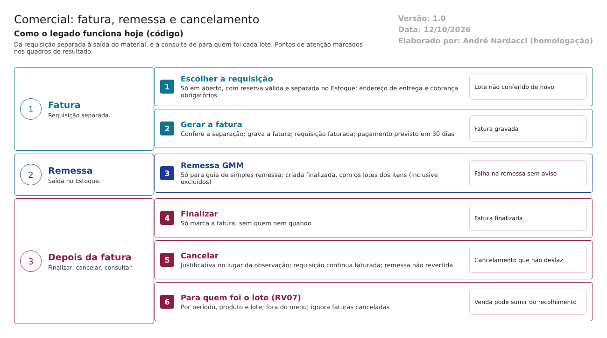

Objetivo
Este documento descreve como a venda é faturada no Comercial do LabMedSys, como a fatura gera a remessa (a saída do material) no Estoque e como a fatura é finalizada ou cancelada. Também mostra como o sistema responde à pergunta de um recolhimento: para quem foi o lote X?
Pela norma, os registros de distribuição precisam estar prontamente disponíveis para quem faz o recolhimento e conter informações suficientes sobre os clientes abastecidos (RDC 658/2022, arts. 345 a 347).
Foi montado a partir do código do sistema legado. O que depende da prática da área está marcado como a validar. Os casos de teste estão no fim.
Escopo
- Fatura: escolha da requisição, endereço de entrega, cobrança, peso e volume.
- Remessa no Estoque (guia de simples remessa).
- Finalizar e cancelar a fatura.
- Impressão da fatura e relatórios de faturamento, incluindo o relatório por lote (RV07).
Fora do escopo: - a requisição e a reserva (fluxo 2); - a separação e a remessa manual no Estoque (fluxos de solicitação e de remessa do Estoque).
Nomes das telas: como aparecem no menu. Os caminhos de código são relativos a 7.comercial/comercial/. Para encurtar: NF/ = HSolutions.Comercial.UI/Areas/NotaFiscal/, Repo/ = HSolutions.Comercial.Infrastructure/NotaFiscal/NotaFiscalRepository.cs, Est/ = 3.estoque/app/.
Visão geral do processo

- Na tela Fatura, o usuário escolhe uma requisição em aberto já separada pelo Estoque.
- Informa o endereço de entrega, o tipo de cobrança, o peso e o volume.
- Ao gerar, o sistema confere de novo a separação, grava a fatura e marca a requisição como faturada.
- Se o tipo de fornecimento é "guia de simples remessa", pede ao Estoque a remessa, com os lotes da requisição.
- A fatura pode ser finalizada ou cancelada, com justificativa.
- Para um recolhimento, o relatório RV07 Produtos Faturados lista as faturas por produto e lote. Ele está fora do menu.
Descrição funcional das etapas
1. Gerar a fatura
Regras de negócio
- RN001 – A lista de requisições da tela só traz as requisições em aberto com reserva válida no Estoque e já separadas (
NF/Controllers/FaturaController.cs:46-70;Repo:93-96). - RN002 – A tela exige requisição, endereço de entrega e tipo de cobrança (
NF/Controllers/FaturaController.cs:262-287). Só os endereços do tipo entrega do cliente são oferecidos (linhas 133-160). - RN003 – A conferência "requisição atendida pelo Estoque" da tela está fixada como verdadeira no código, com o comentário "TODO" (
NF/Controllers/FaturaController.cs:271). A conferência real fica na gravação (RN004). - RN004 – Na gravação (
NF/Controllers/FaturaController.cs:195-260): - o sistema confere no Estoque se a reserva foi separada, desde que o número da reserva seja maior que zero (linhas 216-220; fluxo 2, RN020);
- grava a fatura com quem criou e a data do servidor, o valor total dos itens não excluídos e o pagamento previsto para 30 dias depois da data da tela;
- marca a requisição como faturada (
Repo:58-65). - RN005 – A situação do lote não é conferida de novo. Entre a requisição e a fatura, o lote pode ter sido bloqueado, posto em reanálise ou recolhido. A fatura só confere a separação.
- Inferência, a confirmar no teste: um lote bloqueado depois da separação é faturado e remetido.
Telas do sistema
| Módulo | Tela | Finalidade |
|---|---|---|
| Comercial | Fatura | Gerar a fatura da requisição separada |
2. Remessa no Estoque
Regras de negócio
- RN006 – A remessa só é pedida quando o tipo de fornecimento tem o vínculo guia de simples remessa (
NF/Controllers/FaturaController.cs:226-232). Nos outros tipos, a fatura não gera saída no Estoque. A validar com a área: como o material sai nesses casos. - RN007 – A fatura é gravada antes de pedir a remessa. Se a remessa falhar, a fatura fica sem remessa e o usuário não é avisado: o erro é ignorado (
NF/Controllers/FaturaController.cs:232-248). - RN008 – No Estoque, a remessa é criada já finalizada, do tipo GMM, ligada à fatura e à solicitação, com o endereço de entrega, o peso, o volume e as assinaturas configuradas (
Est/LaboSys_BLL/bllRemessa.cs:438-535). - RN009 – Os lotes da remessa vêm dos itens da requisição, inclusive os marcados como excluídos (
HSolutions.Comercial.Services/Estoque/EstoqueServiceApi.cs:970-982, sem filtro de exclusão). O valor total da fatura, ao contrário, desconta os excluídos (HSolutions.Comercial.Infrastructure/Cotacao/RequisicaoRepository.cs:258-262). - Inferência, a confirmar no teste: um item excluído da requisição entra na remessa.
- RN010 – A remessa não confere a situação do lote no Estoque (RN005).
Telas do sistema
| Módulo | Tela | Finalidade |
|---|---|---|
| Estoque | Remessa de Material (fluxo do Estoque) | Consultar a remessa gerada pela fatura |
3. Finalizar e cancelar
Regras de negócio
- RN011 – Finalizar só marca a fatura como finalizada. O botão aparece para a fatura ativa e ainda não finalizada (
NF/Models/GridFaturaModel.cs:93-99;Repo:426-431). Não grava quem finalizou nem quando. - RN012 – Cancelar pede uma justificativa e exclui logicamente a fatura. A justificativa é gravada no lugar da observação da fatura, que se perde (
Repo:77-82). - RN013 – O cancelamento não desfaz nada:
- a requisição continua faturada e não pode ser faturada de novo nem cancelada (fluxo 2, RN022);
- a remessa no Estoque não é revertida.
- RN014 – A lista de cancelamento traz as faturas ativas, inclusive as finalizadas (
Repo:212-225). A confirmar no teste: se uma fatura finalizada, ou já cancelada, pode ser cancelada. - RN015 – Na tela de visualização, a data da fatura aparece com o mês no lugar dos minutos, em relógio de 12 horas (
NF/Controllers/FaturaController.cs:102, formatohh:MM).
Telas do sistema
| Módulo | Tela | Finalidade |
|---|---|---|
| Comercial | Fatura (lista) | Consultar, imprimir e finalizar |
| Comercial | Cancelar Fatura | Cancelar com justificativa |
4. Para quem foi o lote: relatórios
Regras de negócio
- RN016 – A fatura impressa e os relatórios de faturamento por produto, por cliente e por fatura saem da tela Fatura (
NF/Controllers/FaturaController.cs:436-530). O modelo do item do relatório tem o lote (HSolutions.Comercial.Reports/Faturamento/FaturamentoItemReportModel.cs:21). A confirmar no teste: se o lote aparece impresso. - RN017 – O RV07 Produtos Faturados filtra por período, tipo de fornecimento, cliente, produto e lote do fabricante. A versão detalhada lista fatura, data, cliente, lote, quantidade e valor (
HSolutions.Comercial.UI/Areas/Relatorio/Controllers/ProdutosFaturadosController.cs;Repo:340-373). É a consulta que um recolhimento precisa. - RN018 – O RV07 e o RV05 Clientes estão fora do menu: o grupo Relatórios está comentado no roteiro (
Hsolutions.Comercial.DB/dml.sql:112-116). Abrem só pelo endereço (a confirmar no teste). - RN019 – O RV07 ignora as faturas canceladas (
Repo:248). Como o cancelamento não desfaz a remessa (RN013), um lote que saiu da empresa numa fatura cancelada some do relatório. - RN020 – O RV07 percorre todos os itens da requisição, sem descontar os excluídos (
Repo:340-373), como a remessa (RN009). Não traz o endereço de entrega nem o número da remessa. - RN021 – O RV07 exige período. Não há consulta direta "todas as vendas do lote X", em qualquer data.
Telas do sistema
| Módulo | Tela | Finalidade |
|---|---|---|
| Comercial | Fatura (impressões) | Fatura e faturamento agrupado |
| Comercial | RV07 Produtos Faturados (fora do menu) | Faturas por produto e lote |
Pontos de atenção
1. Lote com problema depois da requisição é faturado e remetido (RN005, RN010). Nem a fatura nem a remessa conferem a situação do lote (art. 8º, XV; trava 1 do modelo ideal).
2. O relatório de recolhimento esconde vendas (RN019). Fatura cancelada some do RV07, mas o material pode ter saído. Num recolhimento, a empresa não encontraria esse cliente (arts. 346 e 347).
3. O relatório de recolhimento está fora do menu (RN018) e exige período (RN021). Não traz o endereço de entrega (RN020). Os registros não estão "prontamente disponíveis" (art. 346).
4. Falha na remessa sem aviso (RN007). A fatura fica gravada sem a saída do material, e ninguém é avisado.
5. Cancelamento que não desfaz (RN013): a requisição continua faturada, a remessa continua no Estoque, e a observação original da fatura é apagada pela justificativa (RN012).
6. Itens excluídos na remessa e no relatório (RN009, RN020), mas não no valor da fatura. A confirmar no teste.
7. Remessa só para um tipo de fornecimento (RN006). Nos outros, o caminho da saída do material não está no Comercial. A validar com a área.
8. Finalizar sem registro de quem e quando (RN011).
Casos de teste
Dados:
- A requisição TESTE do fluxo 2 (tipo TESTE REMESSA, guia de simples remessa), com o lote TESTEPA001, separada no Estoque.
- Uma segunda requisição TESTE do tipo TESTE COTACAO, separada.
- O cliente TESTE com endereço de entrega (fluxo 1).
- Usuários t.admin e t.semadmin.
| Caso | O que fazer | Resultado esperado |
|---|---|---|
| CT-COM-019 | Abrir a tela Fatura e ver a lista de requisições | Só as em aberto e separadas (RN001) |
| CT-COM-020 | Gerar a fatura sem endereço de entrega | "O endereço entrega é obrigatório!" (RN002) |
| CT-COM-021 | Gerar a fatura da requisição TESTE REMESSA |
Fatura gravada; requisição faturada; remessa GMM no Estoque com o lote TESTEPA001 (RN004, RN008) |
| CT-COM-022 | Gerar a fatura da requisição TESTE COTACAO; procurar a saída no Estoque |
Registrar se há remessa e como o material sai (RN006, ponto 7) |
| CT-COM-023 | Separar uma requisição; bloquear o lote no Estoque; gerar a fatura | Pela norma, recusa. Registrar se faturar e remeter (RN005, ponto 1) |
| CT-COM-024 | Excluir um item da requisição antes de faturar; gerar a fatura; ver a remessa | Item fora da remessa. Registrar se entrar (RN009, ponto 6) |
| CT-COM-025 | Finalizar a fatura | Finalizada. Registrar se aparece quem finalizou e quando (RN011) |
| CT-COM-026 | Cancelar a fatura do CT-COM-021 com justificativa; ver a requisição e a remessa no Estoque | Pela norma, a remessa é revertida ou o cancelamento é recusado. Registrar que a requisição continua faturada e a remessa continua ativa (RN013, ponto 5) |
| CT-COM-027 | Ver a observação da fatura cancelada | Registrar se a observação original foi substituída pela justificativa (RN012) |
| CT-COM-028 | Tentar cancelar uma fatura finalizada e uma já cancelada | Registrar se permitir (RN014) |
| CT-COM-029 | Abrir o RV07 Produtos Faturados pelo endereço | Registrar se abre fora do menu (RN018, ponto 3) |
| CT-COM-030 | No RV07, filtrar pelo lote TESTEPA001 |
Lista as faturas do lote, com cliente, quantidade e data (RN017) |
| CT-COM-031 | Depois do CT-COM-026, filtrar o RV07 pelo lote TESTEPA001 |
Pela norma, a venda aparece, porque o material saiu. Registrar se sumir (RN019, ponto 2) |
| CT-COM-032 | Visualizar uma fatura e conferir a hora | Registrar se a hora mostra o mês no lugar dos minutos (RN015) |
| CT-COM-033 | Imprimir a fatura | Registrar se o lote aparece (RN016) |
Prioridade (testes por risco): CT-COM-031, 023, 026, 029 e 030 primeiro. Eles tocam: - a venda que some do relatório de recolhimento; - o lote com problema faturado e remetido; - o cancelamento que não desfaz a remessa; - a consulta de recolhimento fora do menu.